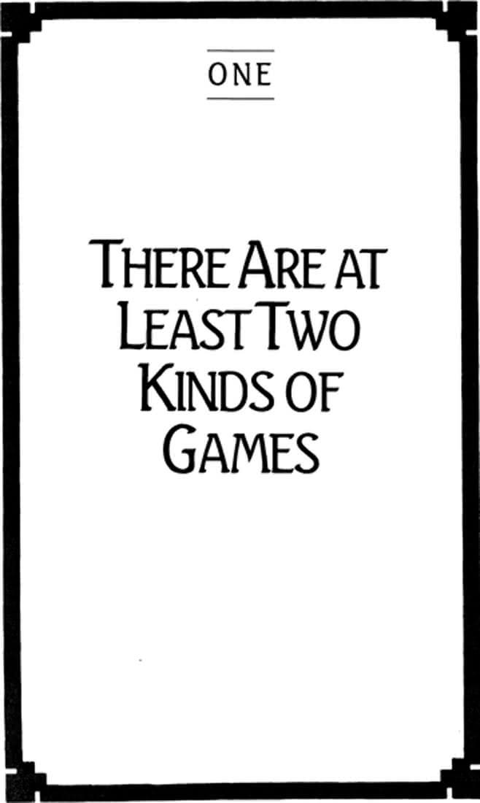

Chapter One: There Are at Least Two Kinds of Games

1
THERE ARE at least two kinds of games. One could be called finite, the other infinite.
A finite game is played for the purpose of winning, an infinite game for the purpose of continuing the play.
2
If a finite game is to be won by someone it must come to a definitive end. It will come to an end when someone has won.
We know that someone has won the game when all the players have agreed who among them is the winner. No other condition than the agreement of the players is absolutely required in determining who has won the game.
It may appear that the approval of the spectators, or the referees, is also required in the determination of the winner. However, it is simply the case that if the players do not agree on a winner, the game has not come to a decisive conclusion—and the players have not satisfied the original purpose of playing. Even if they are carried from the field and forcibly blocked from further play, they will not consider the game ended.
Suppose the players all agree, but the spectators and the referees do not. Unless the players can be persuaded that their agreement was mistaken, they will not resume the play—indeed, they cannot resume the play. We cannot imagine players returning to the field and truly playing if they are convinced the game is over.
There is no finite game unless the players freely choose to play it. No one can play who is forced to play.
It is an invariable principle of all play, finite and infinite, that whoever plays, plays freely. Whoever must play, cannot play.
3
Just as it is essential for a finite game to have a definitive ending, it must also have a precise beginning. Therefore, we can speak of finite games as having temporal boundaries—to which, of course, all players must agree. But players must agree to the establishment of spatial and numerical boundaries as well. That is, the game must be played within a marked area, and with specified players.
Spatial boundaries are evident in every finite conflict, from the simplest board and court games to world wars. The opponents in World War II agreed not to bomb Heidelberg and Paris and declared Switzerland outside the boundaries of conflict. When unnecessary and excessive damage is inflicted by one of the sides in warfare, a question arises as to the legitimacy of the victory that side may claim, even whether it has been a war at all and not simply gratuitous unwarranted violence. When Sherman burned his way from Atlanta to the sea, he so ignored the sense of spatial limitation that for many persons the war was not legitimately won by the Union Army, and has in fact never been concluded.
Numerical boundaries take many forms but are always applied in finite games. Persons are selected for finite play. It is the case that we cannot play if we must play, but it is also the case that we cannot play alone. Thus, in every case, we must find an opponent, and in most cases teammates, who are willing to join in play with us. Not everyone who wishes to do so may play for, or against, the New York Yankees. Neither may they be electricians or agronomists by individual choice, without the approval of their potential colleagues and competitors.
Because finite players cannot select themselves for play, there is never a time when they cannot be removed from the game, or when the other contestants cannot refuse to play with them. The license never belongs to the licensed, nor the commission to the officer.
What is preserved by the constancy of numerical boundaries, of course, is the possibility that all contestants can agree on an eventual winner. Whenever persons may walk on or off the field of play as they wish, there is such a confusion of participants that none can emerge as a clear victor. Who, for example, won the French Revolution?
4
To have such boundaries means that the date, place, and membership of each finite game are externally defined. When we say of a particular contest that it began on September 1, 1939, we are speaking from the perspective of world time; that is, from the perspective of what happened before the beginning of the conflict and what would happen after its conclusion. So also with place and membership. A game is played in that place, with those persons.
The world is elaborately marked by boundaries of contest, its people finely classified as to their eligibilities.
5
Only one person or team can win a finite game, but the other contestants may well be ranked at the conclusion of play.
Not everyone can be a corporation president, although some who have competed for that prize may be vice presidents or district managers.
There are many games we enter not expecting to win, but in which we nonetheless compete for the highest possible ranking.
6
In one respect, but only one, an infinite game is identical to a finite game: Of infinite players we can also say that if they play they play freely; if they must play, they cannot play.
Otherwise, infinite and finite play stand in the sharpest possible contrast.
Infinite players cannot say when their game began, nor do they care. They do not care for the reason that their game is not bounded by time. Indeed, the only purpose of the game is to prevent it from coming to an end, to keep everyone in play.
There are no spatial or numerical boundaries to an infinite game. No world is marked with the barriers of infinite play, and there is no question of eligibility since anyone who wishes may play an infinite game.
While finite games are externally defined, infinite games are internally defined. The time of an infinite game is not world time, but time created within the play itself. Since each play of an infinite game eliminates boundaries, it opens to players a new horizon of time.
For this reason it is impossible to say how long an infinite game has been played, or even can be played, since duration can be measured only externally to that which endures. It is also impossible to say in which world an infinite game is played, though there can be any number of worlds within an infinite game.
7
Finite games can be played within an infinite game, but an infinite game cannot be played within a finite game.
Infinite players regard their wins and losses in whatever finite games they play as but moments in continuing play.
8
If finite games must be externally bounded by time, space, and number, they must also have internal limitations on what the players can do to and with each other. To agree on internal limitations is to establish rules of play.
The rules will be different for each finite game. It is, in fact, by knowing what the rules are that we know what the game is.
What the rules establish is a range of limitations on the players: each player must, for example, start behind the white line, or have all debts paid by the end of the month, charge patients no more than they can reasonably afford, or drive in the right lane.
In the narrowest sense rules are not laws; they do not mandate specific behavior, but only restrain the freedom of the players, allowing considerable room for choice within those restraints.
If these restraints are not observed, the outcome of the game is directly threatened. The rules of a finite game are the contractual terms by which the players can agree who has won.
9
The rules must be published prior to play, and the players must agree to them before play begins.
A point of great consequence to all finite play follows from this: The agreement of the players to the applicable rules constitutes the ultimate validation of those rules.
Rules are not valid because the Senate passed them, or because heroes once played by them, or because God pronounced them through Moses or Muhammad. They are valid only if and when players freely play by them.
There are no rules that require us to obey rules. If there were, there would have to be a rule for those rules, and so on.
10
If the rules of a finite game are unique to that game it is evident that the rules may not change in the course of play—else a different game is being played.
It is on this point that we find the most critical distinction between finite and infinite play: The rules of an infinite game must change in the course of play. The rules are changed when the players of an infinite game agree that the play is imperiled by a finite outcome—that is, by the victory of some players and the defeat of others.
The rules of an infinite game are changed to prevent anyone from winning the game and to bring as many persons as possible into the play.
If the rules of a finite game are the contractual terms by which the players can agree who has won, the rules of an infinite game are the contractual terms by which the players agree to continue playing.
For this reason the rules of an infinite game have a different status from those of a finite game. They are like the grammar of a living language, where those of a finite game are like the rules of debate. In the former case we observe rules as a way of continuing discourse with each other; in the latter we observe rules as a way of bringing the speech of another person to an end.
The rules, or grammar, of a living language are always evolving to guarantee the meaningfulness of discourse, while the rules of debate must remain constant.
11
Although the rules of an infinite game may change by agreement at any point in the course of play, it does not follow that any rule will do. It is not in this sense that the game is infinite.
The rules are always designed to deal with specific threats to the continuation of play. Infinite players use the rules to regulate the way they will take the boundaries or limits being forced against their play into the game itself.
The rule-making capacity of infinite players is often challenged by the impingement of powerful boundaries against their play—such as physical exhaustion, or the loss of material resources, or the hostility of nonplayers, or death.
The task is to design rules that will allow the players to continue the game by taking these limits into play—even when death is one of the limits. It is in this sense that the game is infinite.
This is equivalent to saying that no limitation may be imposed against infinite play. Since limits are taken into play, the play itself cannot be limited.
Finite players play within boundaries; infinite players play with boundaries.
12
Although it may be evident enough in theory that whoever plays a finite game plays freely, it is often the case that finite players will be unaware of this absolute freedom and will come to think that whatever they do they must do. There are several possible reasons for this:
—We saw that finite players must be selected. While no one is forced to remain a lawyer or a rodeo performer or a kundalini yogi after being selected for these roles, each role is nonetheless surrounded both by ruled restraints and expectations on the part of others. One senses a compulsion to maintain a certain level of performance, because permission to play in these games can be canceled. We cannot do whatever we please and remain lawyers or yogis—and yet we could not be either unless we pleased.
—Since finite games are played to be won, players make every move in a game in order to win it. Whatever is not done in the interest of winning is not part of the game. The constant attentiveness of finite players to the progress of the competition can lead them to believe that every move they make they must make.
—It may appear that the prizes for winning are indispensable, that without them life is meaningless, perhaps even impossible. There are, to be sure, games in which the stakes seem to be life and death. In slavery, for example, or severe political oppression, the refusal to play the demanded role may be paid for with terrible suffering or death.
Even in this last, extreme case we must still concede that whoever takes up the commanded role does so by choice. Certainly the price for refusing it is high, but that there is a price at all points to the fact that oppressors themselves acknowledge that even the weakest of their subjects must agree to be oppressed. If the subjects were unresisting puppets or automatons, no threat would be necessary, and no price would be paid—thus the satire of the putative ideal of oppressors in Huxley’s Gammas, Orwell’s Proles, and Rossum’s Universal Robots (Capek).
Unlike infinite play, finite play is limited from without; like infinite play, those limitations must be chosen by the player since no one is under any necessity to play a finite game. Fields of play simply do not impose themselves on us. Therefore, all the limitations of finite play are self-limitations.
13
To account for the large gap between the actual freedom of finite players to step off the field of play at any time and the experienced necessity to stay at the struggle, we can say that as finite players we somehow veil this freedom from ourselves.
Some self-veiling is present in all finite games. Players must intentionally forget the inherently voluntary nature of their play, else all competitive effort will desert them.
From the outset of finite play each part or position must be taken up with a certain seriousness; players must see themselves as teacher, as light-heavyweight, as mother. In the proper exercise of such roles we positively believe we are the persons those roles portray. Even more: we make those roles believable to others. It is in the nature of acting, Shaw said, that we are not to see this woman as Ophelia, but Ophelia as this woman.
If the actress is so skillful that we do see Ophelia as this woman, it follows that we do not see performed emotions and hear recited words, but a person’s true feelings and speech. To some extent the actress does not see herself performing but feels her performed emotion and actually says her memorized lines—and yet the very fact that they are performed means that the words and feelings belong to the role and not to the actress. In fact, it is one of the requirements of her craft that she keep her own person distinct from the role. What she feels as the person she is has nothing to do with Ophelia and must not enter into her playing of the part.
Of course, not for a second will this woman in her acting be unaware that she is acting. She never forgets that she has veiled herself sufficiently to play this role, that she has chosen to forget for the moment that she is this woman and not Ophelia. But then, neither do we as audience forget we are audience. Even though we see this woman as Ophelia, we are never in doubt that she is not. We are in complicity with her veil. We allow her performed emotions to affect us, perhaps powerfully. But we never forget that we allow them to do so.
So it is with all roles. Only freely can one step into the role of mother. Persons who assume this role, however, must suspend their freedom with a proper seriousness in order to act as the role requires. A mother’s words, actions, and feelings belong to the role and not to the person—although some persons may veil themselves so assiduously that they make their performance believable even to themselves, overlooking any distinction between a mother’s feelings and their own.
The issue here is not whether self-veiling can be avoided, or even should be avoided. Indeed, no finite play is possible without it. The issue is whether we are ever willing to drop the veil and openly acknowledge, if only to ourselves, that we have freely chosen to face the world through a mask. Consider the actress whose skill at making Ophelia appear as this woman demonstrates the clarity with which she can distinguish the role from herself. Is it not possible that when she leaves the stage she does not give up acting, but simply leaves off one role for another, say the role of “actress,” an abstracted personage whose public behavior is carefully scripted and produced? At which point do we confront the fact that we live one life and perform another, or others, attempting to make our momentary forgetting true and lasting forgetting?
What makes this an issue is not the morality of masking ourselves. It is rather that self-veiling is a contradictory act—a free suspension of our freedom. I cannot forget that I have forgotten. I may have used the veil so successfully that I have made my performance believable to myself. I may have convinced myself I am Ophelia. But credibility will never suffice to undo the contradictoriness of self-veiling. “To believe is to know you believe, and to know you believe is not to believe” (Sartre).
If no amount of veiling can conceal the veiling itself, the issue is how far we will go in our seriousness at self-veiling, and how far we will go to have others act in complicity with us.
14
Since finite games can be played within an infinite game, infinite players do not eschew the performed roles of finite play. On the contrary, they enter into finite games with all the appropriate energy and self-veiling, but they do so without the seriousness of finite players. They embrace the abstractness of finite games as abstractness, and therefore take them up not seriously, but playfully. (The term “abstract” is used here according to Hegel’s familiar definition of it as the substitution of a part of the whole for the whole, the whole being “concrete.”) They freely use masks in their social engagements, but not without acknowledging to themselves and others that they are masked. For that reason they regard each participant in finite play as that person playing and not as a role played by someone.
Seriousness is always related to roles, or abstractions. We are likely to be more serious with police officers when we find them uniformed and performing their mandated roles than when we find them in the process of changing into their uniforms. Seriousness always has to do with an established script, an ordering of affairs completed somewhere outside the range of our influence. We are playful when we engage others at the level of choice, when there is no telling in advance where our relationship with them will come out—when, in fact, no one has an outcome to be imposed on the relationship, apart from the decision to continue it.
To be playful is not to be trivial or frivolous, or to act as though nothing of consequence will happen. On the contrary, when we are playful with each other we relate as free persons, and the relationship is open to surprise; everything that happens is of consequence. It is, in fact, seriousness that closes itself to consequence, for seriousness is a dread of the unpredictable outcome of open possibility. To be serious is to press for a specified conclusion. To be playful is to allow for possibility whatever the cost to oneself.
There is, however, a familiar form of playfulness often associated with situations protected from consequence—where no matter what we do (within certain limits), nothing will come of it. This is not playing so much as it is playing at, a harmless disregard for social constraints. While this is by no means excluded from infinite play, it is not the same as infinite play.
By relating to others as they move out of their own freedom and not out of the abstract requirements of a role, infinite players are concrete persons engaged with concrete persons. For that reason an infinite game cannot be abstracted, for it is not a part of the whole presenting itself as the whole, but the whole that knows it is the whole. We cannot say a person played this infinite game or that, as though the rules are independent of the concrete circumstances of play. It can be said only that these persons played with each other and in such a way that what they began cannot be finished.
15
Inasmuch as a finite game is intended for conclusion, inasmuch as its roles are scripted and performed for an audience, we shall refer to finite play as theatrical. Although script and plot do not seem to be written in advance, we are always able to look back at the path followed to victory and say of the winners that they certainly knew how to act and what to say.
Inasmuch as infinite players avoid any outcome whatsoever, keeping the future open, making all scripts useless, we shall refer to infinite play as dramatic.
Dramatically, one chooses to be a mother; theatrically, one takes on the role of mother.
16
One obeys the rules in a finite game in order to play, but playing does not consist only in obeying rules.
The rules of a finite game do not constitute a script. A script is composed according to the rules but is not identical to the rules. The script is the record of the actual exchanges between players—whether acts or words—and therefore cannot be written down beforehand. In all true finite play the scripts are composed in the course of play.
This means that during the game all finite play is dramatic, since the outcome is yet unknown. That the outcome is not known is what makes it a true game. The theatricality of finite play has to do with the fact that there is an outcome.
Finite play is dramatic, but only provisionally dramatic. As soon as it is concluded we are able to look backward and see how the sequence of moves, though made freely by the competitors, could have resulted only in this outcome. We can see how every move fit into a sequence that made it inevitable that this player would win.
The fact that a finite game is provisionally dramatic means that it is the intention of each player to eliminate its drama by making a preferred end inevitable. It is the desire of all finite players to be Master Players, to be so perfectly skilled in their play that nothing can surprise them, so perfectly trained that every move in the game is foreseen at the beginning. A true Master Player plays as though the game is already in the past, according to a script whose every detail is known prior to the play itself.
17
Surprise is a crucial element in most finite games. If we are not prepared to meet each of the possible moves of an opponent, our chances of losing are most certainly increased.
It is therefore by surprising our opponent that we are most likely to win. Surprise in finite play is the triumph of the past over the future. The Master Player who already knows what moves are to be made has a decisive advantage over the unprepared player who does not yet know what moves will be made.
A finite player is trained not only to anticipate every future possibility, but to control the future, to prevent it from altering the past. This is the finite player in the mode of seriousness with its dread of unpredictable consequence.
Infinite players, on the other hand, continue their play in the expectation of being surprised. If surprise is no longer possible, all play ceases.
Surprise causes finite play to end; it is the reason for infinite play to continue.
Surprise in infinite play is the triumph of the future over the past. Since infinite players do not regard the past as having an outcome, they have no way of knowing what has been begun there. With each surprise, the past reveals a new beginning in itself. Inasmuch as the future is always surprising, the past is always changing.
Because finite players are trained to prevent the future from altering the past, they must hide their future moves. The unprepared opponent must be kept unprepared. Finite players must appear to be something other than what they are. Everything about their appearance must be concealing. To appear is not to appear. All the moves of a finite player must be deceptive: feints, distractions, falsifications, misdirections, mystifications.
Because infinite players prepare themselves to be surprised by the future, they play in complete openness. It is not an openness as in candor, but an openness as in vulnerability. It is not a matter of exposing one’s unchanging identity, the true self that has always been, but a way of exposing one’s ceaseless growth, the dynamic self that has yet to be. The infinite player does not expect only to be amused by surprise, but to be transformed by it, for surprise does not alter some abstract past, but one’s own personal past.
To be prepared against surprise is to be trained. To be prepared for surprise is to be educated.
Education discovers an increasing richness in the past, because it sees what is unfinished there. Training regards the past as finished and the future as to be finished. Education leads toward a continuing self-discovery; training leads toward a final self-definition.
Training repeats a completed past in the future. Education continues an unfinished past into the future.
18
What one wins in a finite game is a title.
A title is the acknowledgment of others that one has been the winner of a particular game. Titles are public. They are for others to notice. I expect others to address me according to my titles, but I do not address myself with them—unless, of course, I address myself as an other. The effectiveness of a title depends on its visibility, its noticeability to others.
19
Any given finite game can be played many times, although each occasion of its occurrence is unique. The game that was played at that time by those players can never be played again.
Since titles are timeless, but exist only so far as they are acknowledged, we must find means to guarantee the memory of them. The birettas of dead cardinals are suspended from the ceilings of cathedrals, as it were forever; the numbers of great athletes are “retired” or withdrawn from all further play; great achievements are carved in imperishable stone or memorialized by perpetual flames.
Some titles are inherited, though only when the bloodline or some other tangible connection with the original winner has been established, suggesting that the winners have continued to exist in their descendants. The heirs to titles are therefore obliged to display the appropriate emblems: a coat of arms or identifiable styles of speech, clothing, or behavior.
It is a principal function of society to validate titles and to assure their perpetual recognition.
20
It is in connection with the timelessness of titles that we can first discern the importance of death to both finite and infinite games and the great difference between the ways death is understood in each.
A finite game must always be won with a terminal move, a final act within the boundaries of the game that establishes the winner beyond any possibility of challenge. A terminal move results, in other words, in the death of the opposing player as player. The winner kills the opponent. The loser is dead in the sense of being incapable of further play.
Properly speaking, life and death as such are rarely the stakes of a finite game. What one wins is a title; and when the loser of a finite game is declared dead to further play, it is equivalent to declaring that person utterly without title—a person to whom no attention whatsoever need be given. Death, in finite play, is the triumph of the past over the future, a condition in which no surprise is possible.
For this reason, death for a finite player need have nothing to do with the physical demise of the body; it is not a reference to a corporeal state. There are two ways in which death is commonly associated with the fate of the body: One can be dead in life, or one can be alive in death.
Death in life is a mode of existence in which one has ceased all play; there is no further striving for titles. All competitive engagement with others has been abandoned. For some, though not for all, death in life is a misfortune, the resigned acceptance of a loser’s status, a refusal to hold any title up for recognition. For others, however, death in life can be regarded as an achievement, the result of a spiritual discipline, say, intended to extinguish all traces of struggle with the world, a liberation from the need for any title whatsoever. “Die before ye die,” declare the Sufi mystics.
Life in death concerns those who are titled and whose titles, since they are timeless, may not be extinguished by death. Immortality, in this case, is not a reward but the condition necessary to the possession of rewards. Victors live forever not because their souls are unaffected by death but because their titles must not be forgotten.
It was not merely the souls of the Egyptian pharaohs that passed on into the afterlife, but their complete offices and roles, along with all the tangible reminders of their earthly triumphs—including servants put to death that they might accompany their titled masters into eternity. For Christian saints “death has lost its sting” not because there is something inherently imperishable in the human soul, but because they have fought the good fight, and they have successfully pressed on “toward the goal for the prize of the upward call of God in Christ Jesus” (Paul).
Soldiers commonly achieve a life in death. Soldiers fight not to stay alive but to save the nation. Those who do fight only to protect themselves are, in fact, considered guilty of the highest military crimes. Soldiers who die fighting the enemy, however, receive the nation’s highest reward: They are declared unforgettable. Even unknown soldiers are memorialized—though their names have been lost, their titles will not be.
What the winners of finite games achieve is not properly an afterlife but an afterworld, not continuing existence but continuing recognition of their titles.
21
There are games in which the stakes do seem to be life and death.
Extreme forms of bondage sometimes offer persons the privilege of staying alive in exchange for their play—and death for refusing to play. There is, however, something odd in this exchange. A slave does not so much receive a life as give a life—a life whose only function is to reflect the master’s superiority. The slave’s life is the property of the master; the slave exists only as an emblem of the master’s prior victories.
A slave can have life only by giving it away. “He who loves his life loses it, and he who hates his life in this world will keep it for eternal life” (Jesus).
Perhaps a more common example of such life-or-death forms of bondage is found in those persons who resort to expensive medical strategies to be cured of life-threatening illness. They, too, seem to be giving life away in order to win it back. So also are those who observe special diets or patterns of life designed to prolong their youth and to postpone aging and death indefinitely; they hate their life in this world now in order that they may have it later. And just as with slaves, the life they receive is given to them by others: doctors, yogis, or their anonymous admirers.
When life is viewed by a finite player as the award to be won, then death is a token of defeat. Death is not, therefore, chosen, but inflicted. It happens to one when the struggle against it fails. Death comes as a judgment, a dishonor, a sign of certain weakness. Death for the finite player is deserved, earned. “The wages of sin is death” (Paul).
If the losers are dead, the dead are also losers.
There is a contradiction here: If the prize for winning finite play is life, then the players are not properly alive. They are competing for life. Life, then, is not play, but the outcome of play. Finite players play to live; they do not live their playing. Life is therefore deserved, bestowed, possessed, won. It is not lived. “Life itself appears only as a means to life” (Marx).
This is a contradiction common to all finite play. Because the purpose of a finite game is to bring play to an end with the victory of one of the players, each finite game is played to end itself. The contradiction is precisely that all finite play is play against itself.
22
Death, for finite players, is abstract, not concrete. It is not the whole person, but only an abstracted fragment of the whole, that dies in life or lives in death.
So also is life abstract for finite players. It is not the whole person who lives. If life is a means to life, we must abstract ourselves, but only for the sake of winning an abstraction.
Immortality, therefore, is the triumph of such abstraction. It is a state of unrelieved theatricality. An immortal soul is a person who cannot help but continue living out a role already scripted. An immortal person could not choose to die nor, for the same reason, choose to live. Immortality is serious and in no way playful. One’s actions can have no consequence beyond themselves. There are no surprises in the afterworld.
Of course, immortality of the soul—the bare soul, cleansed of any personality traces—is rarely what is desired in the yearning for immortality. “The information that my soul is to last forever could then be of no more personal concern to me than the news that my appendix is to be preserved eternally in a bottle” (Flew). More often what one intends to preserve is a public personage, a permanently veiled selfhood. Immortality is the state of forgetting that we have forgotten—that is, overlooking the fact that we freely decided to enter into finite play, a decision in itself playful and not serious.
Immortality is therefore the supreme example of the contradictoriness of finite play: It is a life one cannot live.
23
Infinite players die. Since the boundaries of death are always part of the play, the infinite player does not die at the end of play, but in the course of play.
The death of an infinite player is dramatic. It does not mean that the game comes to an end with death; on the contrary, infinite players offer their death as a way of continuing the play. For that reason they do not play for their own life; they live for their own play. But since that play is always with others, it is evident that infinite players both live and die for the continuing life of others.
Where the finite player plays for immortality, the infinite player plays as a mortal. In infinite play one chooses to be mortal inasmuch as one always plays dramatically, that is, toward the open, toward the horizon, toward surprise, where nothing can be scripted. It is a kind of play that requires complete vulnerability. To the degree that one is protected against the future, one has established a boundary and no longer plays with but against others.
Death is a defeat in finite play. It is inflicted when one’s boundaries give way and one falls to an opponent. The finite player dies under the terminal move of another.
Although infinite players choose mortality, they may not know when death comes, but we can always say of them that “they die at the right time” (Nietzsche).
The finite play for life is serious; the infinite play of life is joyous. Infinite play resounds throughout with a kind of laughter. It is not a laughter at others who have come to an unexpected end, having thought they were going somewhere else. It is laughter with others with whom we have discovered that the end we thought we were coming to has unexpectedly opened. We laugh not at what has surprisingly come to be impossible for others, but over what has surprisingly come to be possible with others.
24
Infinite play is inherently paradoxical, just as finite play is inherently contradictory. Because it is the purpose of infinite players to continue the play, they do not play for themselves. The contradiction of finite play is that the players desire to bring play to an end for themselves. The paradox of infinite play is that the players desire to continue the play in others. The paradox is precisely that they play only when others go on with the game.
Infinite players play best when they become least necessary to the continuation of play. It is for this reason they play as mortals.
The joyfulness of infinite play, its laughter, lies in learning to start something we cannot finish.
25
If finite players acquire titles from winning their games, we must say of infinite players that they have nothing but their names.
Names, like titles, are given. Persons cannot name themselves any more than they can entitle themselves. However, unlike titles, which are given for what a person has done, a name is given at birth—at a time when a person cannot yet have done anything. Titles are given at the end of play, names at the beginning.
When a person is known by title, the attention is on a completed past, on a game already concluded, and not therefore to be played again. A title effectively takes a person out of play.
When a person is known only by name, the attention of others is on an open future. We simply cannot know what to expect. Whenever we address each other by name we ignore all scripts, and open the possibility that our relationship will become deeply reciprocal. That I cannot now predict your future is exactly what makes mine unpredictable. Our futures enter into each other. What is your future, and mine, becomes ours. We prepare each other for surprise.
Titles are abstractions; names are always concrete.
It can happen that when persons are distinctly identified as winners their names can have the force of titles. We sometimes act “to clear our name” of aspersions, or to defend the “good name of our family.” Names can even become titles in the formal sense, such as “Caesar,” or “Napoleon,” or “the name of Jesus which is above every name” (Paul). When Jesus is regarded by way of a title instead of a name, he becomes an abstracted, theatrical role, a person with whom we can share no future, rather a Master Player in whose future we live in a manner that has already been scripted, or decided, for us. “Before Abraham was, I am,” Jesus said of himself in the Gospel of John.
26
Titles, then, point backward in time. They have their origin in an unrepeatable past.
Titles are theatrical. Each title has a specified ceremonial form of address and behavior. Titles such as Captain, Mrs., Lord, Esquire, Professor, Comrade, Father, Under Secretary, signal not only a mode of address with its appropriate deference or respect, but also a content of address (only certain subjects are suitable for discussion with the Admiral of the Fleet or the District Attorney or the Holy Mother), and a manner of address (shaking hands, kneeling, prostrating or crossing oneself, saluting, bowing, averting the eyes, or standing in silence).
The mode and content of address and the manner of behavior are recognitions of the areas in which titled persons are no longer in competition. There are precise ways in which one may no longer compete with the Dalai Lama or the Heavyweight Champion of the World. There is no possible action by which one may deprive them of their titles to contests now in the past. Therefore, insofar as we recognize their titles we withdraw from any contest with them in those areas.
27
The titled are powerful. Those around them are expected to yield, to withdraw their opposition, and to conform to their will—in the arena in which the title was won.
The exercise of power always presupposes resistance. Power is never evident until two or more elements are in opposition. Whichever element can move another is the more powerful. If no one else ever strove to be a Boddhisattva or the Baton Twirling Champion of the State of Indiana, those titles would be powerless—no one would defer to them.
The exercise of power also presupposes a closed field and finite units of time. My power is determined by the amount of resistance I can displace within given spatial and temporal limits. The question is not whether I can lift ten pounds, but whether I can lift ten pounds five feet off the ground in one second—or within some other precise limitation of time and space. The establishment of the limits makes it possible to know how powerful I am in relation to others.
Power is always measured in units of comparison. In fact, it is a term of competition: How much resistance can I overcome relative to others?
Power is a concept that belongs only in finite play. But power is not properly measurable until the game is completed—until the designated period of time has run out. During the course of play we cannot yet determine the power of the players, because to the degree that it is genuine play the outcome is unknown. A player who is being pushed all over the field by an apparently superior opponent may display an unsuspected burst of activity at the end and take the victory. Until the final hours of the count in the presidential election of 1948 many Americans thought that Harry Truman was a far weaker candidate than Thomas Dewey.
To speak meaningfully of a person’s power is to speak of what that person has already completed in one or another closed field. To see power is to look backward in time.
Inasmuch as power is determined by the outcome of a game, one does not win by being powerful; one wins to be powerful. If one has sufficient power to win before the game has begun, what follows is not a game at all.
One can be powerful only through the possession of an acknowledged title—that is, only by the ceremonial deference of others. Power is never one’s own, and in that respect it shows the contradiction inherent in all finite play. I can be powerful only by not playing, by showing that the game is over. I can therefore have only what powers others give me. Power is bestowed by an audience after the play is complete.
Power is contradictory, and theatrical.
28
It may seem implausible to claim that power is a matter of deference to titles. If anything appears to be a permanent feature of reality it is power—the constant impingement on us of superior forces both without and within. Everything from changes in the weather and acts of national governments to the irresistible push of instinct and the process of aging seems to confirm us as helpless creatures of circumstance—and to that degree powerless. It seems plainly false to say that power is theatrical.
And yet, the theatrical nature of power seems to be consistent with the principle arrived at earlier: Whoever must play cannot play. The intuitive idea in that principle is that no one can engage us competitively unless we fully cooperate, unless we join the game and join it to win. Because power is measurable only in comparative—that is, competitive—terms, it presupposes some kind of cooperation. If we defer to titled winners, it is only because we regard ourselves as losers. To do so is freely to take part in the theater of power.
There certainly are acts of government, or acts of nature, or acts of god that far exceed any contravening ability of our own, but it is unlikely that we would consider ourselves losers in relation to them. We are not defeated by floods or genetic disease or the rate of inflation. It is true that these are real, but we do not play against reality; we play according to reality. We do not eliminate weather or genetic influence but accept them as the realities that establish the context of play, the limits within which we are to play.
If I accept death as inevitable, I do not struggle against mortality. I struggle as a mortal.
All the limitations of finite play are self-limitations.
29
Power is a feature only of finite games. It is not dramatic but theatrical. How then do infinite players contend with power? Infinite play is always dramatic; its outcome is endlessly open. There is no way of looking back to make a definitive assessment of the power or weakness of earlier play. Infinite players look forward, not to a victory in which the past will achieve a timeless meaning, but toward ongoing play in which the past will require constant reinterpretation. Infinite players do not oppose the actions of others, but initiate actions of their own in such a way that others will respond by initiating their own.
We need a term that will stand in contrast to “power” as it acquires its meaning in finite play. Let us say that where the finite player plays to be powerful the infinite player plays with strength.
A powerful person is one who brings the past to an outcome, settling all its unresolved issues. A strong person is one who carries the past into the future, showing that none of its issues is capable of resolution. Power is concerned with what has already happened; strength with what has yet to happen. Power is finite in amount. Strength cannot be measured, because it is an opening and not a closing act. Power refers to the freedom persons have within limits, strength to the freedom persons have with limits.
Power will always be restricted to a relatively small number of selected persons. Anyone can be strong.
Strength is paradoxical. I am not strong because I can force others to do what I wish as a result of my play with them, but because I can allow them to do what they wish in the course of my play with them.
30
Although anyone who wishes can be an infinite player, and although anyone can be strong, we are not to suppose that power cannot work irremediable damage on infinite play. Infinite play cannot prevent or eliminate evil. Though infinite players are strong, they are not powerful and do not attempt to become powerful.
Evil is the termination of infinite play. It is infinite play coming to an end in unheard silence.
Unheard silence does not necessarily mean the death of the player. Unheard silence is not the loss of the player’s voice, but the loss of listeners for that voice. It is an evil when the drama of a life does not continue in others for reason of their deafness or ignorance.
There are silences that can be heard, even from the dead and from the severely oppressed. Much is recoverable from an apparently forgotten past. Sensitive and faithful historians can learn much of what has been lost, and much therefore that can be continued.
There are silences, however, that will never and can never be heard. There is much evil that remains beyond redemption. When Europeans first landed on the North American continent the native population spoke as many as ten thousand distinct languages, each with its own poetry and treasury of histories and myths, its own ways of living in harmony with the spontaneities of the natural environment. All but a very few of those tongues have been silenced, their cultures forever lost to those of us who stand ignorantly in their place.
Evil is not the termination of a finite game. Finite players, even those who play for their own lives, know the stakes of the games they freely choose to play.
Evil is not the attempt to eliminate the play of another according to published and accepted rules, but to eliminate the play of another regardless of the rules. Evil is not the acquisition of power, but the expression of power. It is the forced recognition of a title—and therein lies the contradiction of evil, for recognition cannot be forced. The Nazis did not compete with the Jews for a title, but demanded recognition of a title without competition. This could be achieved, however, only by silencing the Jews, only by hearing nothing from them. They were to die in silence, along with their culture, without anyone noticing, not even those who managed the institutions and instruments of death.
31
Evil is never intended as evil. Indeed, the contradiction inherent in all evil is that it originates in the desire to eliminate evil. “The only good Indian is a dead Indian.”
Evil arises in the honored belief that history can be tidied up, brought to a sensible conclusion. It is evil to act as though the past is bringing us to a specifiable end. It is evil to assume that the past will make sense only if we bring it to an issue we have clearly in view. It is evil for a nation to believe it is “the last, best hope on earth.” It is evil to think history is to end with a return to Zion, or with the classless society, or with the Islamicization of all living infidels.
Your history does not belong to me. We live with each other in a common history.
Infinite players understand the inescapable likelihood of evil. They therefore do not attempt to eliminate evil in others, for to do so is the very impulse of evil itself, and therefore a contradiction. They only attempt paradoxically to recognize in themselves the evil that takes the form of attempting to eliminate evil elsewhere.
Evil is not the inclusion of finite games in an infinite game, but the restriction of all play to one or another finite game.